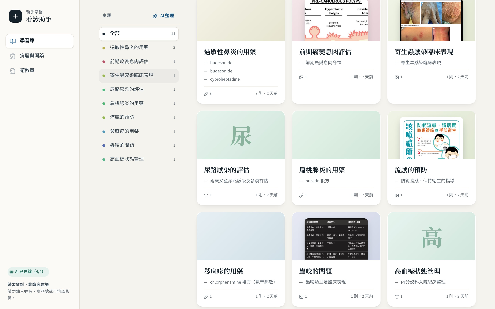
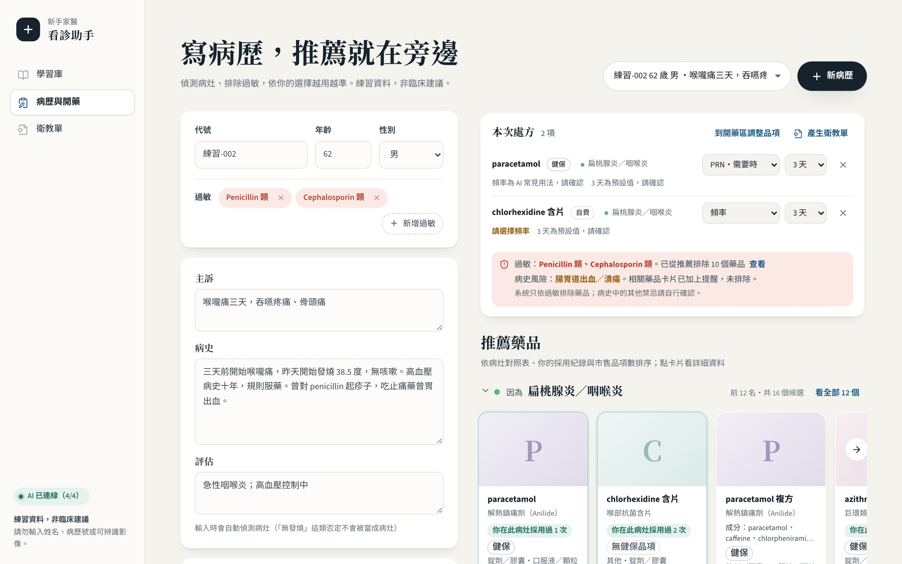
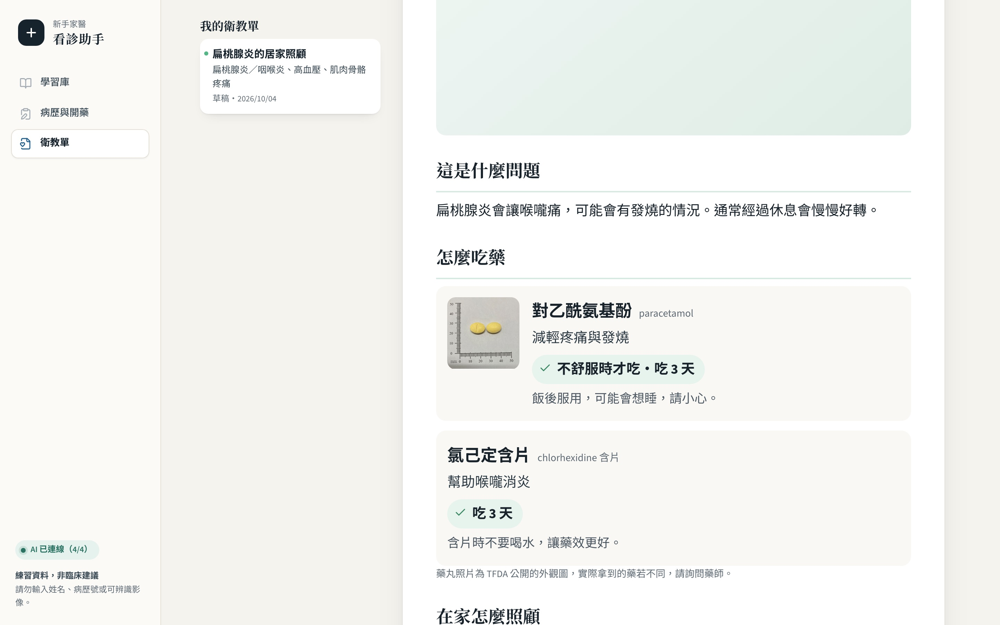
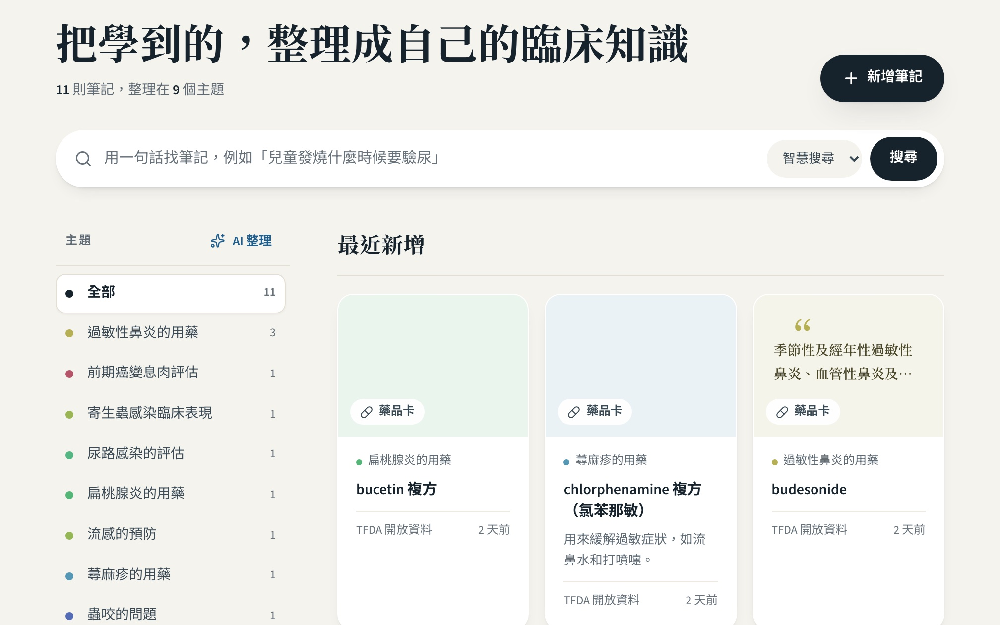
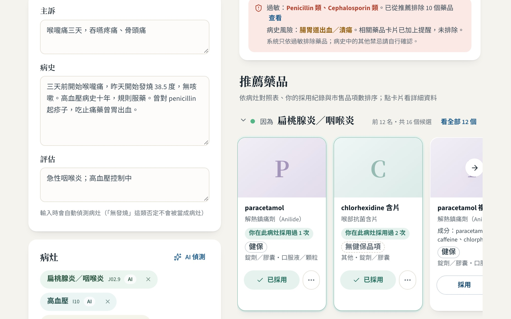
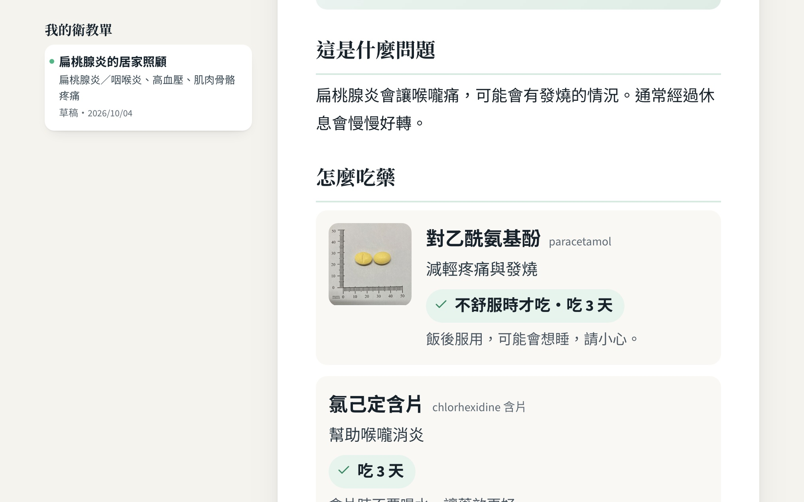

筆記散落，
要用時找不到
期刊圖表存在手機相簿和備忘錄，分類靠自己。
「那些圖片…需要查的時候，就是反覆的拿出來看」
給剛上門診的家醫科醫師，
一個看診輔助與學習工具。



訪談 3 位醫師（其中 1 位為腸胃科）後整理
期刊圖表存在手機相簿和備忘錄，分類靠自己。
「那些圖片…需要查的時候，就是反覆的拿出來看」
家醫科問題很廣，不常遇到的病灶不容易想到可用的藥。
「病歷可以抓到這個病人有哪些症狀、可能需要哪些藥」
藥名、用法一長串，病人回家照著做很難。
「最終你還是要用病人聽得懂的話講給他聽」
醫師已經在用 OpenEvidence 查證，它做得很好。我接在它的下游。
醫師已在使用，
查文獻、看出處
收藏所學 · 寫病歷時的用藥候選 · 衛教單
以長輩為主，
需要大字、少字、多圖
把醫師查到、學到的，變成自己的知識庫；
而且越用，越懂這位醫師的用藥習慣。
看到好的期刊圖表就截圖，或錄一段語音，存起來。
一邊寫病歷，旁邊就列出可以考慮的藥。
一鍵產生長輩看得懂的圖文衛教，確認後交給病人。
上傳圖片、寫文字，或直接錄音
擷取圖中文字、語音轉逐字稿，建議標題與主題；看得到的期刊與 DOI 才帶入，不杜撰
例如「胃出血嚴重度評估」，依意思比對，不必記得關鍵字

涵蓋 27 個常見家醫問題；關鍵字對照為主，找不到才請 AI
對應藥理類別，排除過敏與「不再推薦」的藥，標示健保
才寫進開藥區；頻率與天數由醫師決定

從病歷與本次處方產生，附一張不含文字的衛教插圖
點文字就能改，勾選確認後才能交付
大字、條列，附 TFDA 公開的藥丸外觀照
